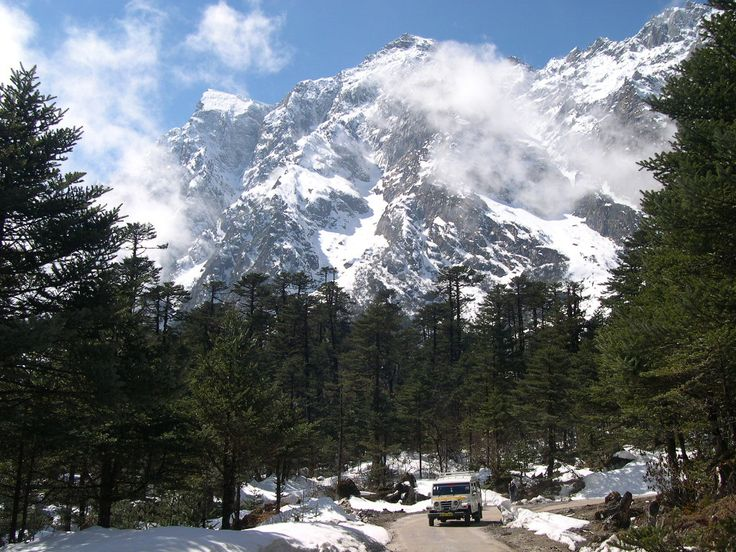

Goecha La Trek
One of the most spectacular treks in Sikkim offering breathtaking views of Kanchenjunga. This challenging 11-day trek takes you through rhododendron forests, alpine meadows, and pristine lakes with stunning mountain vistas.

Dzongri Trek
A moderate trek perfect for beginners, offering panoramic views of major Himalayan peaks. The trail passes through beautiful forests, traditional villages, and provides an excellent introduction to high-altitude trekking.

Singalila Ridge Trek
Walk along the Indo-Nepal border with stunning sunrise views over Everest, Lhotse, and Kanchenjunga. This ridge trek offers some of the best mountain panoramas in the entire Himalayan range.

Green Lake Trek
An adventurous high-altitude trek leading to the base camp of Mount Kanchenjunga. This challenging expedition takes you through diverse ecosystems and offers close encounters with the world's third-highest peak.